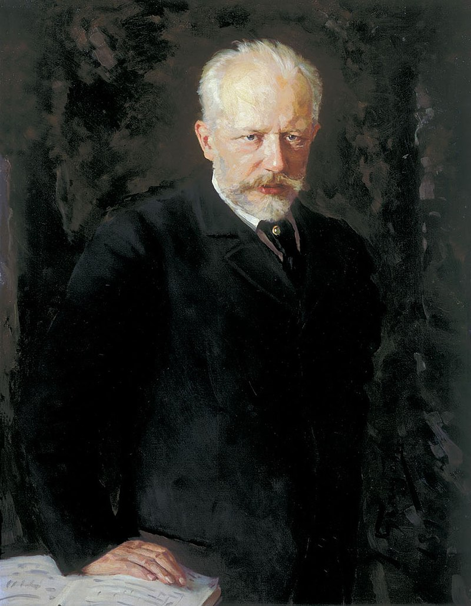
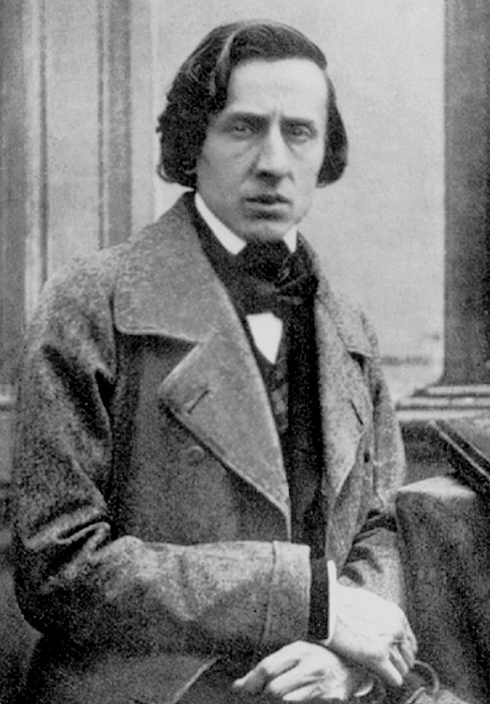
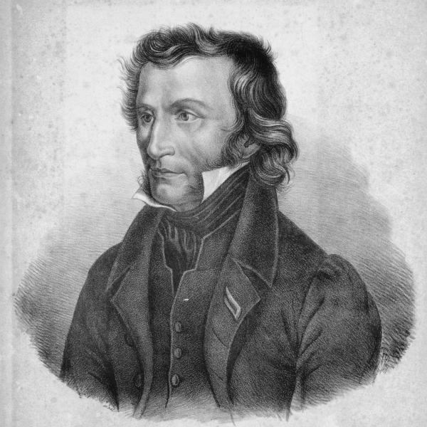
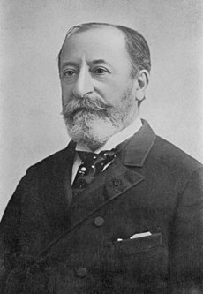
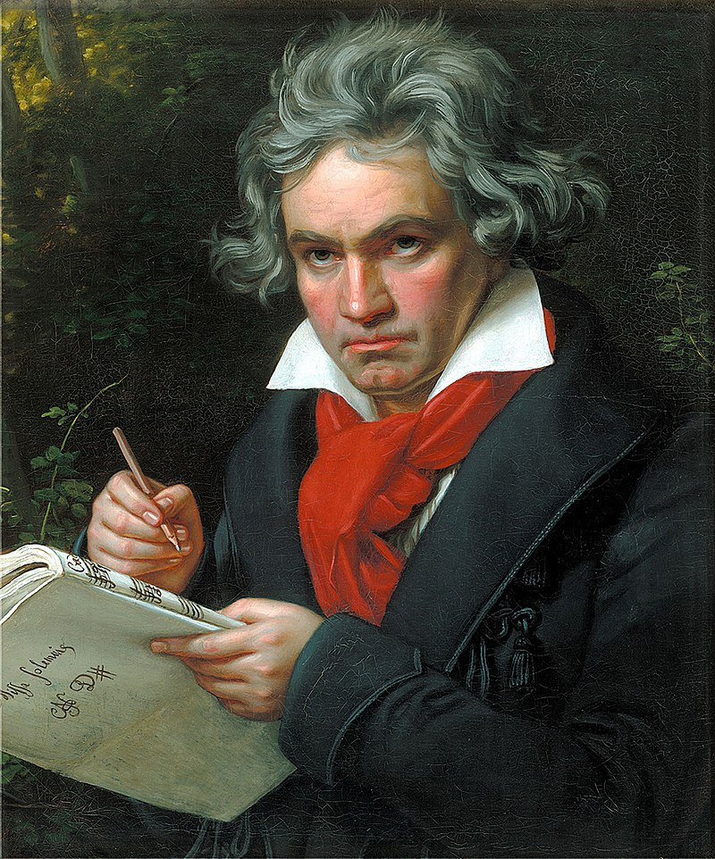

En la música, el Romanticismo fue un período que transcurrió, aproximadamente, entre los años 1810 y la primera década del siglo xx, y suele englobar toda la música escrita de acuerdo a las normas y formas de dicho período.
El Romanticismo musical es un período de la música académica que fue precedido por el Clasicismo y seguido por el Impresionismo. Está relacionado, por supuesto, con el Romanticismo en otras disciplinas: la corriente de cambios en Literatura, Bellas Artes y Filosofía, aunque suele haber ligeras diferencias temporales dado que, el Romanticismo en aquellas Artes y en la Filosofía, se suele reconocer entre los años 1780 y 1840.
El Romanticismo como movimiento global en las Artes y la Filosofía tiene como precepto que la verdad no podía ser deducida a partir de axiomas y que, en el mundo, había realidades inevitables que solo se podían captar mediante la emoción, el sentimiento y la intuición. La música del Romanticismo intentaba expresar estas emociones hacia una persona u objeto al cual quiere o aprecia.
Vamos a descubrir las principales características estilísticas del Romanticismo Musical:
| Piotr Ilich Chaikovski |  | Piotr Ilich Chaikovski (en ruso, Пётр Ильич Чайковский, romanización Piotr Il'ič Čajkovskij)(Vótkinsk, 25 de abriljul./ 7 de mayo de 1840greg.-San Petersburgo, 25 de octubrejul./ 6 de noviembre de 1893greg.)fue un compositor ruso del período del Romanticismo. Es autor de algunas de las obras de música clásica más famosas del repertorio actual, como los ballets El lago de los cisnes, La bella durmiente y El cascanueces, la Obertura 1812, la obertura-fantasía Romeo y Julieta, el Primer concierto para piano, el Concierto para violín, sus sinfonías Cuarta, Quinta y Sexta y la ópera Eugenio Oneguin y La dama de picas......VER MAS |
| Frédéric Chopin |  | Frédéric François Chopinnota (en polaco Fryderyk Franciszek Chopin;Żelazowa Wola, Gran Ducado de Varsovia, 1 de marzo12 de 1810-París, 17 de octubre de 1849) fue un profesor, compositor y virtuoso pianista polaco, considerado uno de los más importantes de la historia y uno de los mayores representantes del Romanticismo musical. Su maravillosa técnica, su refinamiento estilístico y su elaboración armónica se han comparado históricamente, por su influencia en la música posterior, con las de Wolfgang Amadeus Mozart, Ludwig van Beethoven, Johannes Brahms, Franz Liszt o Serguéi Rajmáninov. La descendencia pedagógica de Chopin llegó hasta pianistas como Maurizio Pollini y Alfred Cortot, por medio de Georges Mathias y Emile Descombes, respectivamente....VER MAS | Niccolò Paganini |  | Niccolò Paganini (pronunciación en italiano: /ni(k)koˈlɔ ppaɡaˈniːni; Génova, 27 de octubre de 1782-Niza, 27 de mayo de 1840) fue un compositor italiano. Es considerado uno de los arquetipos del virtuosismo del violín y uno de los máximos representantes del movimiento instrumental del Romanticismo. Contribuyó con sus aportaciones al desarrollo de la «técnica moderna del violín».Los 24 caprichos para violín son una de sus obras más conocidas y han servido de inspiración a numerosos compositores. Además del violín compuso música para mandolina, guitarra, viola y fagot. Destacan sus duetos para violín y guitarra y sus composiciones para cuarteto de cuerdas....VER MAS |
| Camille Saint-Saëns |  | Músico muy dotado —fue un virtuoso pianista y también un excelente improvisador al órgano—, espíritu curioso ante todo, escritor, caricaturista, gran viajero, Saint-Saëns desempeñó un papel excepcional en la renovación de la música francesa, tanto por su enseñanza —tuvo como alumnos, entre otros, a Gabriel Fauré y a André Messager—, como, sobre todo, por su actividad en favor de la música nueva —fue uno de los fundadores de la Société Nationale de Musique, destinada a tocar y difundir la música francesa—. Puede considerársele un eslabón esencial de la renovación que condujo a Claude Debussy y a Maurice Ravel.VER MAS |
| Ludwig van Beethoven |  | Ludwig van Beethoven (Bonn, Arzobispado de Colonia; 16 de diciembre de 1770-Viena, 26 de marzo de 1827) fue un compositor, director de orquesta, pianista y profesor de piano alemán. Su legado musical abarca, cronológicamente, desde el Clasicismo hasta los inicios del Romanticismo. Es considerado uno de los compositores más importantes de la historia de la música y su legado ha influido de forma decisiva en la evolución posterior de este arte.....VER MAS |